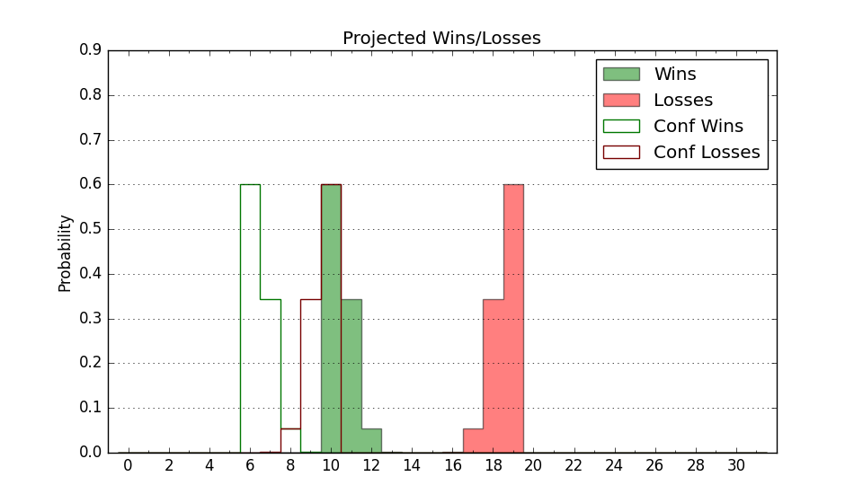

| Home | Game Probabilities | Conferences | Preseason Predictions | Odds Charts | NCAA Tournament |
| City: | Murfreesboro, Tennessee | |
| Conference: | Conference USA (4th)
| |
| Record: | 6-7 (Conf) 10-16 (Overall) | |
| Ratings: | Comp.: -12.1 (297th) Net: -12.2 (297th) Off: 94.1 (335th) Def: 106.2 (189th) SoR: 0.0 (138th) |
| Remaining | ||||||
|---|---|---|---|---|---|---|
| Date | Opponent | Win Prob | Pred. | |||
| 3/2 | @ Sam Houston St. (178) | 15.9% | L 60-71 | |||
| 3/5 | Liberty (124) | 25.3% | L 62-69 | |||
| 3/9 | @ Louisiana Tech (74) | 4.9% | L 53-72 | |||
| Previous | Game Score | |||||
| Date | Opponent | Win Prob | Result | Off | Def | Net |
| 11/6 | Northern Kentucky (196) | 43.0% | W 74-57 | 10.5 | 15.9 | 26.4 |
| 11/9 | Stephen F. Austin (173) | 38.3% | W 67-62 | -3.2 | 14.8 | 11.5 |
| 11/13 | Western Carolina (121) | 24.2% | L 64-66 | 5.9 | 2.0 | 7.9 |
| 11/21 | UAB (120) | 24.1% | L 57-58 | -7.9 | 11.3 | 3.5 |
| 11/24 | (N) Illinois Chicago (168) | 24.4% | L 40-70 | -30.6 | -10.0 | -40.6 |
| 11/25 | (N) Ohio (153) | 21.6% | L 68-80 | 9.4 | -15.9 | -6.6 |
| 11/26 | (N) UMKC (245) | 36.6% | W 63-59 | 2.9 | 6.4 | 9.3 |
| 12/2 | Wofford (184) | 41.1% | L 64-74 | -12.1 | 5.3 | -6.8 |
| 12/5 | Missouri St. (145) | 31.1% | W 77-73 | 10.1 | 0.4 | 10.6 |
| 12/9 | Belmont (129) | 26.5% | L 65-75 | -3.3 | -7.6 | -10.9 |
| 12/19 | @Saint Mary's (17) | 1.5% | L 34-71 | -22.4 | 8.5 | -13.9 |
| 12/22 | @Southern Utah (241) | 23.4% | L 63-69 | 0.9 | 8.2 | 9.0 |
| 12/30 | @Murray St. (138) | 10.8% | L 54-75 | -12.4 | 4.4 | -8.0 |
| 1/11 | Louisiana Tech (74) | 14.8% | L 52-60 | -12.7 | 8.8 | -3.9 |
| 1/13 | Sam Houston St. (178) | 39.2% | L 51-60 | -10.4 | 3.2 | -7.1 |
| 1/18 | @UTEP (214) | 20.6% | L 59-73 | -4.4 | -3.4 | -7.8 |
| 1/20 | @New Mexico St. (295) | 34.7% | L 62-73 | -9.6 | -7.7 | -17.2 |
| 1/24 | Jacksonville St. (180) | 39.8% | W 75-67 | 16.3 | 4.9 | 21.2 |
| 1/27 | FIU (291) | 63.1% | W 79-61 | 16.2 | 3.7 | 19.9 |
| 2/3 | @Western Kentucky (147) | 12.2% | L 65-88 | 0.8 | -16.0 | -15.2 |
| 2/8 | @Liberty (124) | 9.0% | L 53-88 | -13.5 | -10.9 | -24.4 |
| 2/10 | @FIU (291) | 33.5% | W 68-66 | 0.0 | 7.1 | 7.2 |
| 2/15 | New Mexico St. (295) | 64.4% | W 76-69 | 18.4 | -15.6 | 2.8 |
| 2/17 | UTEP (214) | 46.9% | W 96-90 | 23.2 | -10.9 | 12.3 |
| 2/21 | @Jacksonville St. (180) | 16.3% | L 68-76 | 15.5 | -10.1 | 5.4 |
| 2/24 | Western Kentucky (147) | 32.0% | W 74-72 | 8.1 | 1.6 | 9.7 |
| Stats & Trends | |||||
|---|---|---|---|---|---|
| Current | Day | Week | Month | Season | |
| Composite | -12.1 | -0.0 | +0.3 | +0.2 | -16.4 |
| Comp Rank | 297 | -- | -- | -2 | -187 |
| Net Efficiency | -12.2 | -0.0 | +0.5 | +1.5 | -- |
| Net Rank | 297 | +1 | +3 | +10 | -- |
| Off Efficiency | 94.1 | +0.0 | +0.8 | +4.5 | -- |
| Off Rank | 335 | +1 | +2 | +19 | -- |
| Def Efficiency | 106.2 | -0.0 | -0.3 | -3.0 | -- |
| Def Rank | 189 | +2 | -- | -34 | -- |
| SoS Rank | 210 | -- | +14 | +37 | -- |
| Exp. Wins | 10.5 | -0.0 | +0.5 | +2.4 | -7.0 |
| Exp. Conf Wins | 6.5 | -0.0 | +0.5 | +2.4 | -2.7 |
| Conf Champ Prob | 0.0 | -- | -- | -- | -21.6 |

| Advanced Stats | ||
|---|---|---|
| Stat | Value | Rank |
| Off Eff FG % | 0.460 | 309 |
| Off Ast Ratio | 0.112 | 343 |
| Off ORB% | 0.292 | 129 |
| Off TO Rate | 0.171 | 327 |
| Off FT Ratio | 0.314 | 226 |
| Def Eff FG % | 0.494 | 131 |
| Def Ast Ratio | 0.129 | 74 |
| Def ORB% | 0.284 | 199 |
| Def TO Rate | 0.130 | 307 |
| Def FT Ratio | 0.298 | 106 |